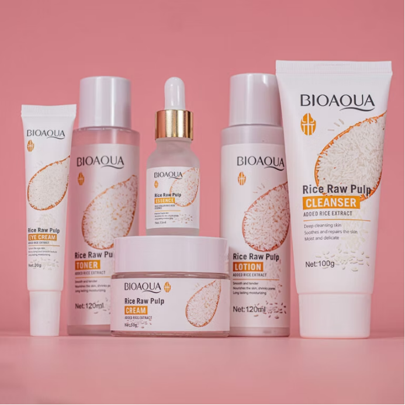
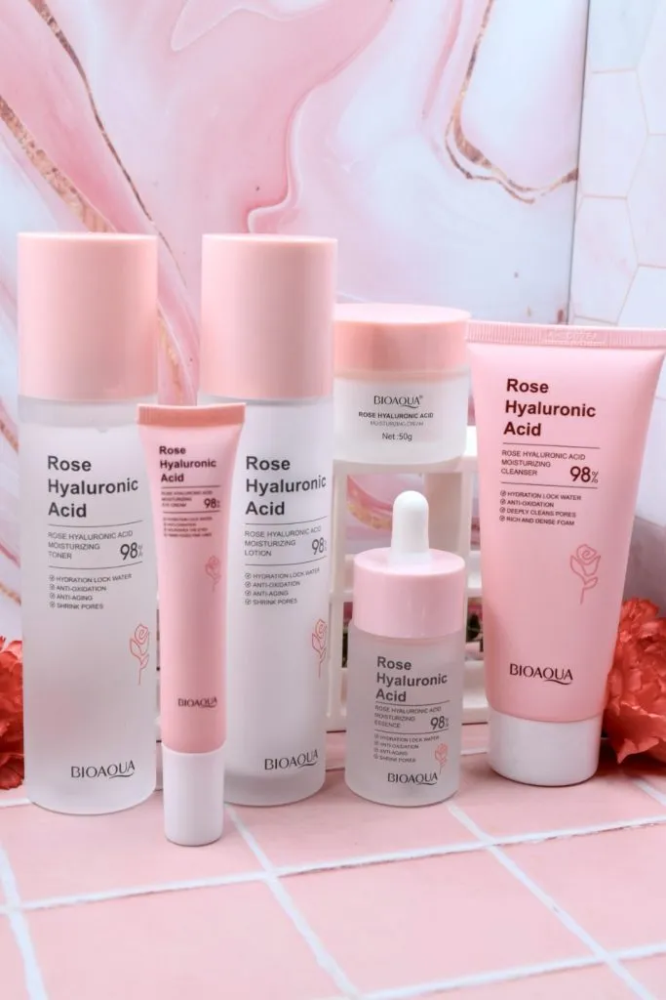

Almacenes Siman
- San Salvador, La Libertad, Santa Ana y San Miguel
- Lunes a Domingo: 9:00 am - 8:00 pm
Cuidado especializado para las necesidades de la piel latina — hidratación, equilibrio, luminosidad y protección en cada paso, pensado para el clima tropical de Centroamérica.

Cuidado especializado para las necesidades de la piel latina — hidratación, equilibrio, luminosidad y protección en cada paso, pensado para el clima tropical de Centroamérica.

Visita cualquiera de estas sucursales para adquirir nuestros productos